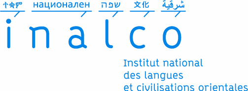

L'Association des Anciens Inalcoliens en Master (AAIM)
Une plate-forme pour les anciens étudiants du master de l'
Inalco
Accueil
Formations en master
Login
Contact
Découvrir les 8 masters proposés par l'Inalco !
Le master
Didactique des langues (DDL)
Le master
Langues, littératures, civilisations étrangères et régionales (LLCER)
Le master
Langues et sociétés
Le master
Management et Commerce international (MCI)
Le master
Relations internationales (RI)
Le master
Sciences du langage (SDL)
Le master
Traitement automatique des langues (TAL)
Le master
Traduction et Interprétation (TI)